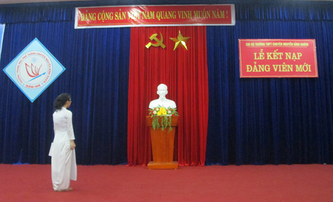
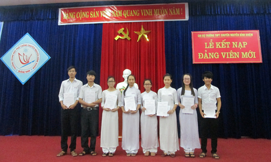

Chi bộ Trường THPT chuyên Nguyễn Bỉnh Khiêm kết nạp Đảng viên mới

Lần cập nhật cuối lúc Thứ tư, 02 Tháng 3 2016 10:57 Viết bởi Administrator Thứ năm, 19 Tháng 6 2014 08:51
Chiều ngày 15/06/2014, Chi bộ trường THPT chuyên Nguyễn Bỉnh Khiêm đã long trọng tổ chức lễ kết nạp 8 đoàn viên,học sinh ưu tú vào Đảng Cộng sản Việt Nam.

Đến dự buổi lễ có đồng chí Nguyễn Đình Tiến – Bí thư chi bộ, Hiệu trưởng nhà trường, cùng toàn thể đảng viên đang sinh hoạt tại chi bộ và các quần chúng ưu tú.
Các đồng chí được kết nạp Đảng lần này đều là những đoàn viên ưu tú có kết quả học tập giỏi đạt được nhiều giải cao trong học tập và có nhiều thành tích xuất sắc trong phong trào Đoàn, Hội. Phát biểu tại buổi lễ, đồng chí Nguyễn Đình Tiến đã chia sẻ niềm vui đối với cá nhân 8 đồng chí được kết nạp Đảng nói riêng và Chi bộ trường THPT chuyên Nguyễn Bỉnh Khiêm nói chung. Đồng thời, nhấn mạnh việc đứng vào hàng ngũ của Đảng đã đánh dấu một bước chuyển biến quan trọng về nhận thức của mỗi cá nhân. Các đảng viên mới không được tự mãn mà phải xem việc học tập là nhiệm vụ hàng đầu, tiếp tục phấn đấu, nỗ lực không ngừng nâng cao đạo đức cách mạng, tiên phong, gương mẫu trong các hoạt động, góp phần thắng lợi nhiệm vụ chính trị của Chi bộ, Đảng bộ nơi các em học tập sau này.
